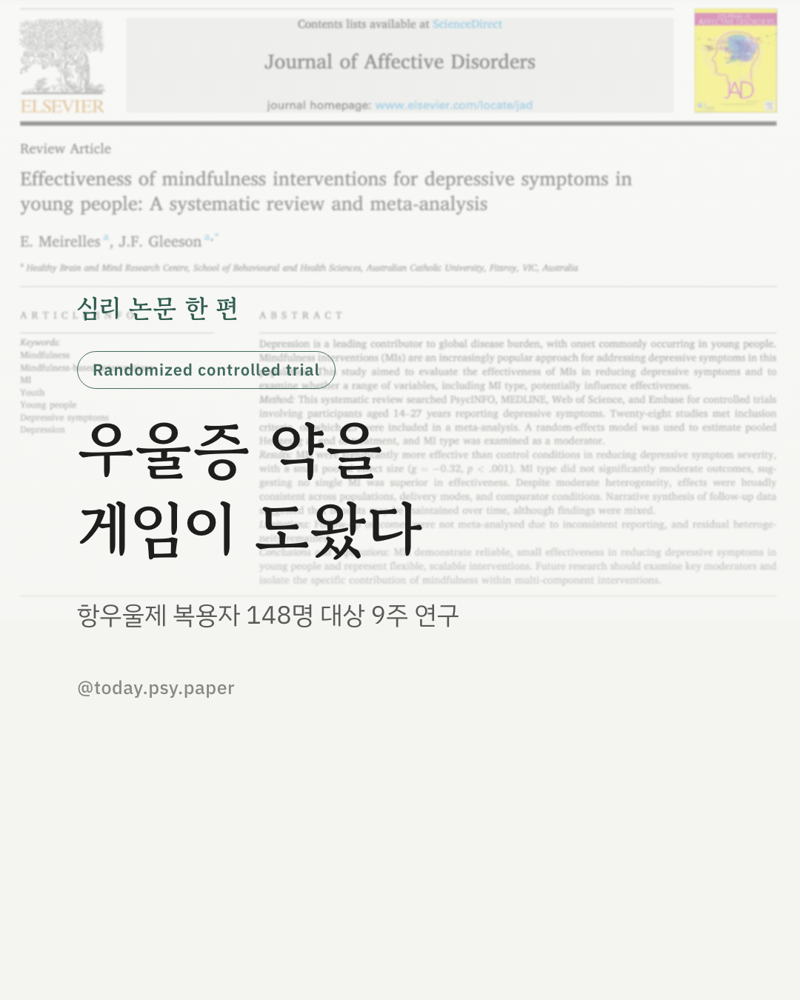
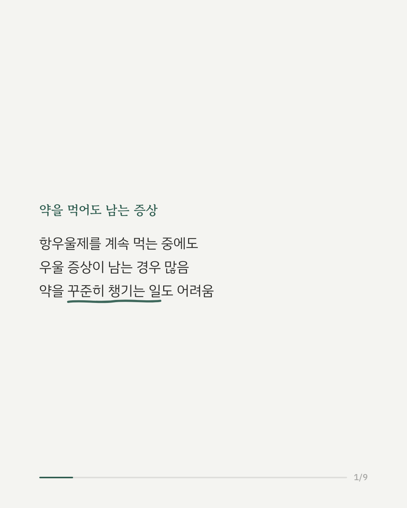
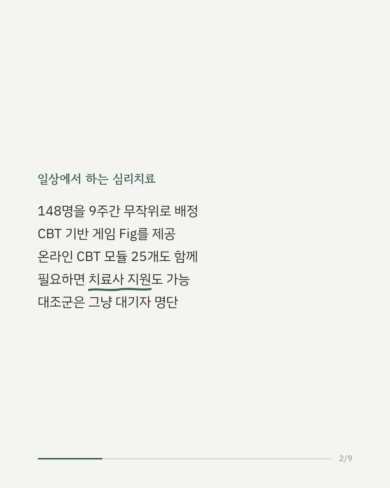
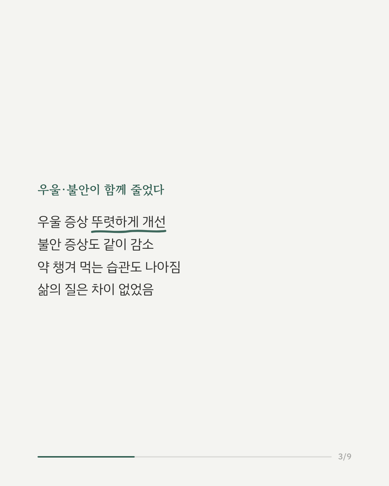
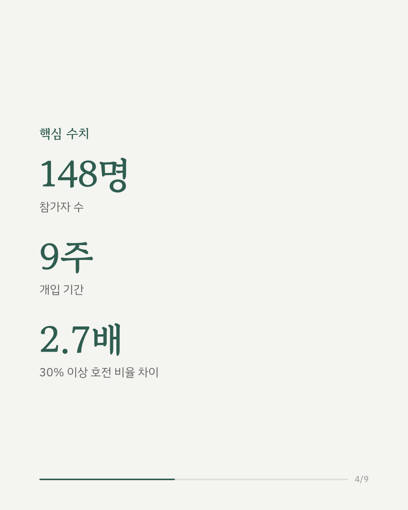
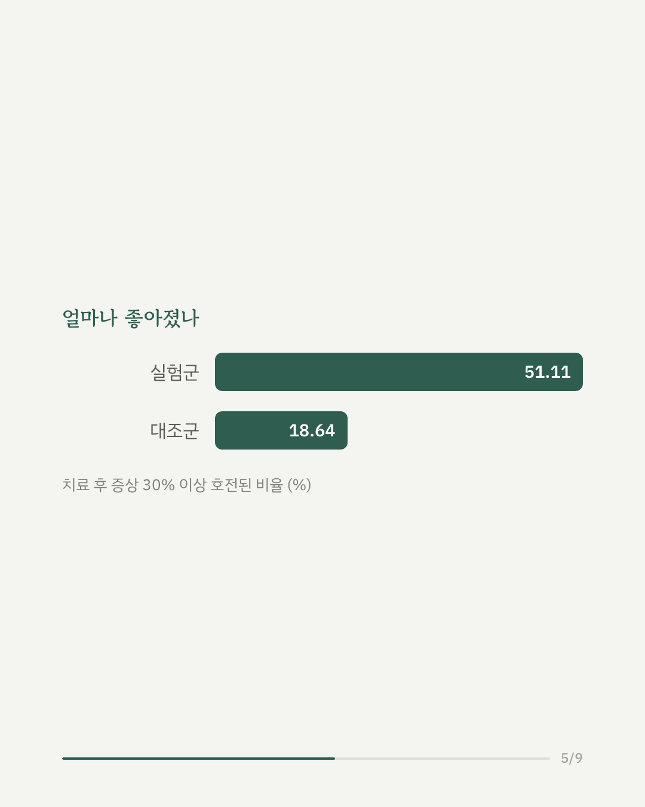
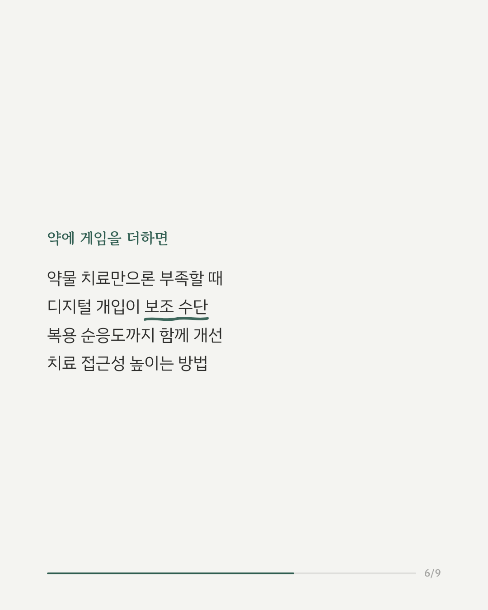
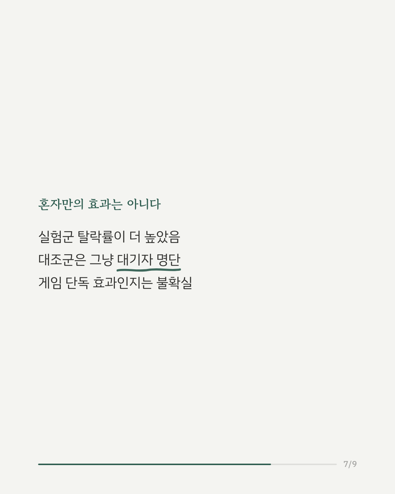
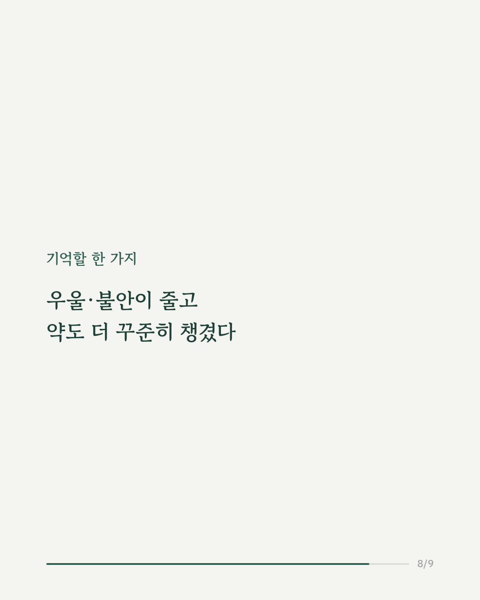
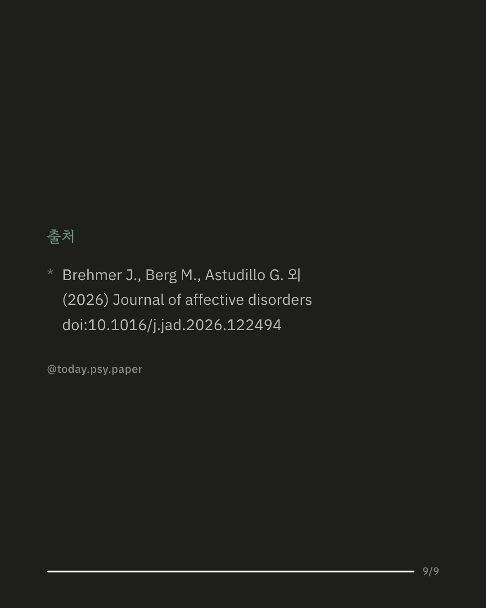

항우울제를 복용 중인데도 우울 증상이 남아있는 경우가 많습니다. 약을 꾸준히 챙겨 먹는 것 자체도 쉽지 않은 문제입니다. 이런 분들을 위해 CBT 기반 스마트폰 게임과 온라인 치료 프로그램을 결합한 디지털 개입의 효과를 살펴본 무작위 대조 연구가 있습니다. 항우울제 치료 중이지만 잔여 증상이 있는 성인 148명을 9주간 두 그룹으로 무작위 배정했습니다. 한쪽은 CBT 기반 게임 'Fig'와 온라인 CBT 모듈, 필요하면 치료사 지원까지 받았고, 다른 쪽은 대기자 명단에 올랐습니다. 그 결과 치료 후 우울 증상과 불안 증상이 뚜렷하게 줄었고, 약물 복용 순응도도 함께 개선되었습니다. 증상이 30% 이상 좋아진 비율은 실험군이 51.1%, 대조군이 18.6%로 약 2.7배 차이가 났습니다. 다만 실험군의 중도 탈락률이 대조군보다 훨씬 높았고, 비교군이 아무 개입 없이 기다리기만 한 대기자 집단이었다는 점은 결과 해석에 신중할 필요가 있음을 보여줍니다. 그럼에도 약물 치료만으로 충분치 않은 환자들에게 게임 기반 심리치료가 접근성 높은 보조 수단이 될 수 있음을 시사합니다. Journal of Affective Disorders (2026), 'A smartphone-based serious game to improve mental health and medication adherence in adults with depression: A randomised controlled trial' #임상심리 #정신건강정보 #심리학연구 #논문리뷰 #우울증 #항우울제 #디지털치료제
python3 publish.py 42759616